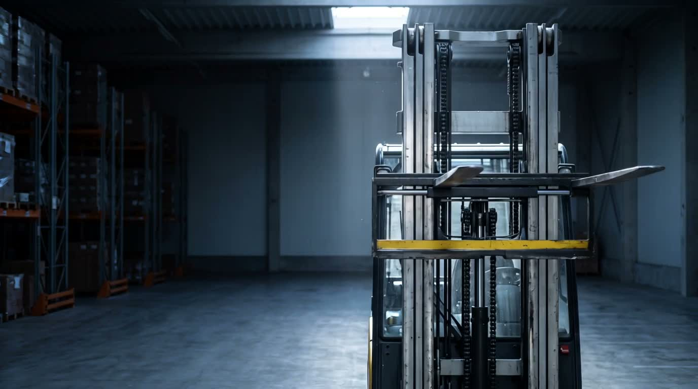
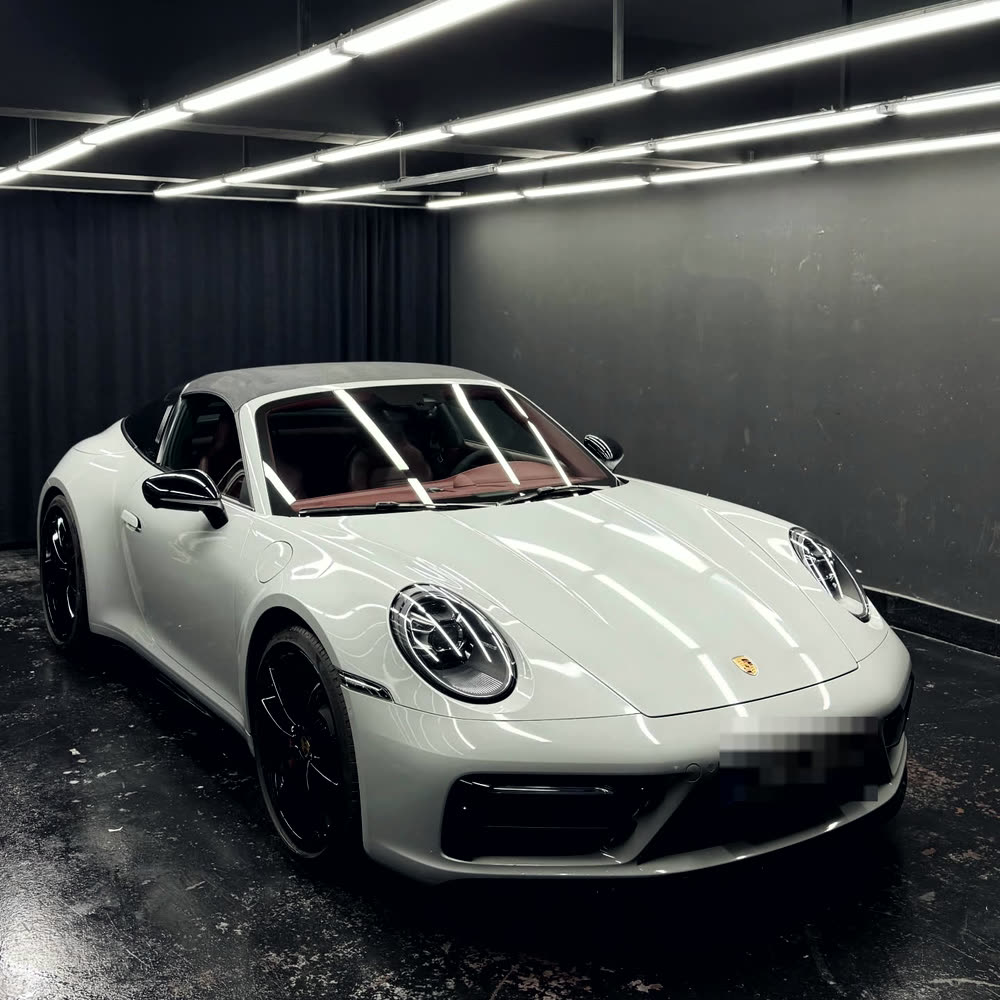

Örnek Çalışmalar
Aşağıdaki iki site gerçek Bursa firmaları için hazırlandı. Tasarım, metin, görsel düzenleme ve kodun tamamı bana ait. Sayfaları telefonda da açıp inceleyebilirsiniz.

Bursa · Forklift satış, kiralama ve servis
Kaydırdıkça ilerleyen video ile açılan tek sayfalık kurumsal site. Makine filosu, servis ağı, yedek parça ve müşteri yorumları tek akışta. Logo, siteye özel vektör olarak yeniden çizildi.
Siteyi aç →
Bursa Mudanya · Araç kaplama ve PPF
Koyu stüdyo diliyle kurulmuş tanıtım sitesi ve ayrı bir iş arşivi. Film yüzeyi seçici, tür filtreli galeri ve tam ekran görsel büyütme. Müşteri plakaları kapatıldı.
Siteyi aç →Bu sayfalar tanıtım amaçlı örnek çalışmalardır. Firmaların kendi resmî siteleri değildir ve arama motorlarına kapalıdır.